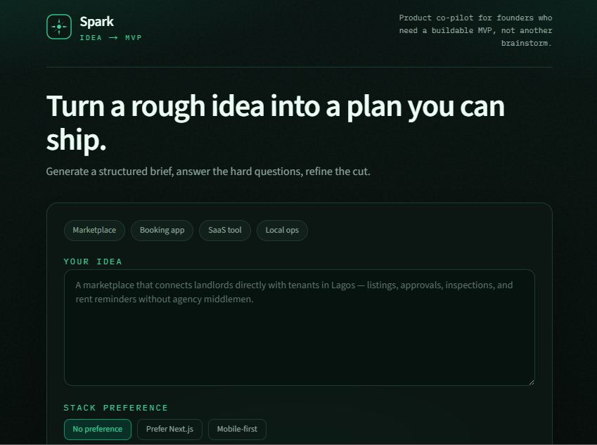

Idea → MVP spec assistant with streaming LLM API integration. Paste a product idea; get a structured brief founders can actually build from, powered by Groq.

Solo-built a live product that turns a vague founder idea into a scoped MVP brief in under a minute: problem, target user, prioritized features, suggested stack, 2-week plan, and open questions.
Owned end-to-end: product UX, streaming API integration, refine loop, export/share, and abuse guards on a public demo.
Founders often have a rough idea but no scoped MVP. Generic chat tools dump walls of text; Spark turns that ambiguity into a brief someone can actually build from, then lets them refine it with answers to open questions.
Round 1 generates the brief. Round 2 uses founder answers to tighten scope, with the same six-section shell so the UI stays predictable while tokens stream in.
Streaming over wait-and-dump. Founders see the brief form as it arrives. It feels like a product, not a black-box chat.
Structured sections, not freeform chat. Fixed headings (problem, user, features, stack, plan, questions) make output scannable and exportable.
Server-only LLM calls + rate limits. Keys stay off the client; a simple IP bucket protects the free-tier demo.
Short share IDs, not URL-stuffed briefs. Briefs live server-side so links stay clean and storage can swap (KV → GitHub → local) without changing the product surface.
POST /api/generate → validate idea · rate-limit · stream Groq completions
POST /api/shares → store brief by short id · GET /s/[id] resolves for view
Section parser → match streamed ## headings into UI shells as tokens arrive
Share storage order: Vercel KV / Upstash → GitHub branch → local .data/shares
A live, shareable demo of the same pattern used to ship AI features inside real products: product UX + Node API + LLM streaming, not a model-training research project. Proof for founders and hiring managers that I can wire LLM APIs into a usable vertical slice.